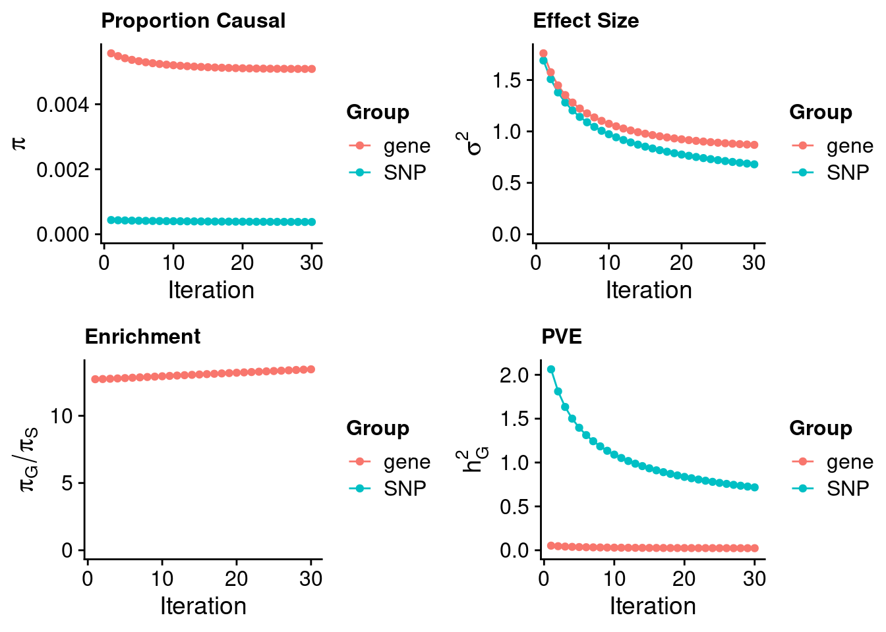

Last updated: 2023-10-14
Checks: 5 2
Knit directory: cTWAS_analysis/
This reproducible R Markdown analysis was created with workflowr (version 1.7.0). The Checks tab describes the reproducibility checks that were applied when the results were created. The Past versions tab lists the development history.
The R Markdown file has unstaged changes. To know which version of the R Markdown file created these results, you’ll want to first commit it to the Git repo. If you’re still working on the analysis, you can ignore this warning. When you’re finished, you can run wflow_publish to commit the R Markdown file and build the HTML.
Great job! The global environment was empty. Objects defined in the global environment can affect the analysis in your R Markdown file in unknown ways. For reproduciblity it’s best to always run the code in an empty environment.
The command set.seed(20211220) was run prior to running the code in the R Markdown file. Setting a seed ensures that any results that rely on randomness, e.g. subsampling or permutations, are reproducible.
Great job! Recording the operating system, R version, and package versions is critical for reproducibility.
Nice! There were no cached chunks for this analysis, so you can be confident that you successfully produced the results during this run.
Using absolute paths to the files within your workflowr project makes it difficult for you and others to run your code on a different machine. Change the absolute path(s) below to the suggested relative path(s) to make your code more reproducible.
| absolute | relative |
|---|---|
| /project2/xinhe/shengqian/cTWAS/cTWAS_analysis/data/OxHb/ | data/OxHb |
Great! You are using Git for version control. Tracking code development and connecting the code version to the results is critical for reproducibility.
The results in this page were generated with repository version 3fd82cf. See the Past versions tab to see a history of the changes made to the R Markdown and HTML files.
Note that you need to be careful to ensure that all relevant files for the analysis have been committed to Git prior to generating the results (you can use wflow_publish or wflow_git_commit). workflowr only checks the R Markdown file, but you know if there are other scripts or data files that it depends on. Below is the status of the Git repository when the results were generated:
Ignored files:
Ignored: .Rhistory
Ignored: .ipynb_checkpoints/
Untracked files:
Untracked: LDL_LDLR_locus1.pdf
Untracked: LDL_TEME199_genetrack.pdf
Untracked: LDL_TEME199_locus.pdf
Untracked: Proposal plots.R
Untracked: RGS14.pdf
Untracked: RNF186.pdf
Untracked: Rplots.pdf
Untracked: SCZ_annotation.xlsx
Untracked: SLC8B1.pdf
Untracked: analysis/.ipynb_checkpoints/
Untracked: cache/
Untracked: code/.ipynb_checkpoints/
Untracked: data/.ipynb_checkpoints/
Untracked: data/FUMA_output/
Untracked: data/GO_Terms/
Untracked: data/GTEx_Analysis_v8_eQTL.tar
Untracked: data/G_list.RData
Untracked: data/IBD_ME/
Untracked: data/LB/
Untracked: data/LDL/
Untracked: data/LDL_E_S/
Untracked: data/LDL_E_S_M/
Untracked: data/LDL_M/
Untracked: data/LDL_S/
Untracked: data/OxHb/
Untracked: data/PGC3_SCZ_wave3_public.v2.tsv
Untracked: data/Predictive_Models/
Untracked: data/Supplementary Table 15 - MAGMA.xlsx
Untracked: data/Supplementary Table 20 - Prioritised Genes.xlsx
Untracked: data/UKBB/
Untracked: data/UKBB_SNPs_Info.text
Untracked: data/WhiteBlood_E/
Untracked: data/WhiteBlood_E_M/
Untracked: data/WhiteBlood_E_S_M/
Untracked: data/WhiteBlood_E_S_M_PC/
Untracked: data/WhiteBlood_M/
Untracked: data/WhiteBlood_M_compare/
Untracked: data/WhiteBlood_M_enet/
Untracked: data/cpg_annot.RData
Untracked: data/eqtl/
Untracked: data/gencode.v26.GRCh38.genes.gtf
Untracked: data/gene_OMIM.txt
Untracked: data/gene_pip_0.8.txt
Untracked: data/gwas_sumstats/
Untracked: data/magma.genes.out
Untracked: data/mashr_Heart_Atrial_Appendage.db
Untracked: data/mashr_sqtl/
Untracked: data/mqtl/
Untracked: data/notes.txt
Untracked: data/scz_2018.RDS
Untracked: data/summary_known_genes_annotations.xlsx
Untracked: data/test/
Untracked: hist.pdf
Untracked: ld_pip.pdf
Untracked: submit.sh
Untracked: temp_LDR/
Untracked: test-B1.snpgwas.txt
Unstaged changes:
Deleted: analysis/Atrial_Fibrillation_Heart_Atrial_Appendage.Rmd
Deleted: analysis/Atrial_Fibrillation_Heart_Left_Ventricle.Rmd
Deleted: analysis/Autism_Brain_Amygdala.Rmd
Deleted: analysis/Autism_Brain_Anterior_cingulate_cortex_BA24.Rmd
Deleted: analysis/Autism_Brain_Caudate_basal_ganglia.Rmd
Deleted: analysis/Autism_Brain_Cerebellar_Hemisphere.Rmd
Deleted: analysis/Autism_Brain_Cerebellum.Rmd
Deleted: analysis/Autism_Brain_Cortex.Rmd
Deleted: analysis/Autism_Brain_Frontal_Cortex_BA9.Rmd
Deleted: analysis/Autism_Brain_Hippocampus.Rmd
Deleted: analysis/Autism_Brain_Hypothalamus.Rmd
Deleted: analysis/Autism_Brain_Nucleus_accumbens_basal_ganglia.Rmd
Deleted: analysis/Autism_Brain_Putamen_basal_ganglia.Rmd
Deleted: analysis/Autism_Brain_Spinal_cord_cervical_c-1.Rmd
Deleted: analysis/Autism_Brain_Substantia_nigra.Rmd
Deleted: analysis/BMI_Brain_Amygdala.Rmd
Deleted: analysis/BMI_Brain_Amygdala_S.Rmd
Deleted: analysis/BMI_Brain_Anterior_cingulate_cortex_BA24.Rmd
Deleted: analysis/BMI_Brain_Anterior_cingulate_cortex_BA24_S.Rmd
Deleted: analysis/BMI_Brain_Caudate_basal_ganglia.Rmd
Deleted: analysis/BMI_Brain_Caudate_basal_ganglia_S.Rmd
Deleted: analysis/BMI_Brain_Cerebellar_Hemisphere.Rmd
Deleted: analysis/BMI_Brain_Cerebellar_Hemisphere_S.Rmd
Deleted: analysis/BMI_Brain_Cerebellum.Rmd
Deleted: analysis/BMI_Brain_Cerebellum_S.Rmd
Deleted: analysis/BMI_Brain_Cortex.Rmd
Deleted: analysis/BMI_Brain_Cortex_S.Rmd
Deleted: analysis/BMI_Brain_Frontal_Cortex_BA9.Rmd
Deleted: analysis/BMI_Brain_Frontal_Cortex_BA9_S.Rmd
Deleted: analysis/BMI_Brain_Hippocampus.Rmd
Deleted: analysis/BMI_Brain_Hippocampus_S.Rmd
Deleted: analysis/BMI_Brain_Hypothalamus.Rmd
Deleted: analysis/BMI_Brain_Hypothalamus_S.Rmd
Deleted: analysis/BMI_Brain_Nucleus_accumbens_basal_ganglia.Rmd
Deleted: analysis/BMI_Brain_Nucleus_accumbens_basal_ganglia_S.Rmd
Deleted: analysis/BMI_Brain_Putamen_basal_ganglia.Rmd
Deleted: analysis/BMI_Brain_Putamen_basal_ganglia_S.Rmd
Deleted: analysis/BMI_Brain_Spinal_cord_cervical_c-1.Rmd
Deleted: analysis/BMI_Brain_Spinal_cord_cervical_c-1_S.Rmd
Deleted: analysis/BMI_Brain_Substantia_nigra.Rmd
Deleted: analysis/BMI_Brain_Substantia_nigra_S.Rmd
Deleted: analysis/BMI_S_results.Rmd
Deleted: analysis/Glucose_Adipose_Subcutaneous.Rmd
Deleted: analysis/Glucose_Adipose_Visceral_Omentum.Rmd
Modified: analysis/OxHB.Rmd
Deleted: code/WhiteBlood_M_ener_out/WhiteBlood_WholeBlood.out
Deleted: code/White_Blood_M_out/White_Blood_BreastMammary.err
Deleted: code/White_Blood_M_out/White_Blood_BreastMammary.out
Deleted: code/White_Blood_M_out/White_Blood_ColonTransverse.err
Deleted: code/White_Blood_M_out/White_Blood_ColonTransverse.out
Deleted: code/White_Blood_M_out/White_Blood_KidneyCortex.err
Deleted: code/White_Blood_M_out/White_Blood_KidneyCortex.out
Deleted: code/White_Blood_M_out/White_Blood_Lung.err
Deleted: code/White_Blood_M_out/White_Blood_Lung.out
Deleted: code/White_Blood_M_out/White_Blood_MuscleSkeletal.err
Deleted: code/White_Blood_M_out/White_Blood_MuscleSkeletal.out
Deleted: code/White_Blood_M_out/White_Blood_Ovary.err
Deleted: code/White_Blood_M_out/White_Blood_Ovary.out
Deleted: code/White_Blood_M_out/White_Blood_Prostate.err
Deleted: code/White_Blood_M_out/White_Blood_Prostate.out
Deleted: code/White_Blood_M_out/White_Blood_Testis.err
Deleted: code/White_Blood_M_out/White_Blood_Testis.out
Deleted: code/White_Blood_M_out/White_Blood_WholeBlood.err
Deleted: code/White_Blood_M_out/White_Blood_WholeBlood.out
Deleted: code/run_IBD_ctwas_rss_LDR_ME.R
Note that any generated files, e.g. HTML, png, CSS, etc., are not included in this status report because it is ok for generated content to have uncommitted changes.
These are the previous versions of the repository in which changes were made to the R Markdown (analysis/OxHB.Rmd) and HTML (docs/OxHB.html) files. If you’ve configured a remote Git repository (see ?wflow_git_remote), click on the hyperlinks in the table below to view the files as they were in that past version.
| File | Version | Author | Date | Message |
|---|---|---|---|---|
| Rmd | 3fd82cf | sq-96 | 2023-10-14 | update |
| html | 3fd82cf | sq-96 | 2023-10-14 | update |
| Rmd | 70d8ee8 | sq-96 | 2023-10-14 | update |
| html | 70d8ee8 | sq-96 | 2023-10-14 | update |
| Rmd | d04dec9 | sq-96 | 2023-10-14 | update |
| html | d04dec9 | sq-96 | 2023-10-14 | update |
| html | f442f0e | sq-96 | 2023-10-14 | update |
| Rmd | 6a15ad1 | sq-96 | 2023-10-14 | update |
| html | 6a15ad1 | sq-96 | 2023-10-14 | update |
| Rmd | e0d796f | sq-96 | 2023-10-13 | update |
#estimated prior inclusion probability
ctwas_parameters$group_prior SNP gene
0.0003789661 0.0048196252 #estimated prior effect size
ctwas_parameters$group_prior_var SNP gene
0.6727008 0.5860888 #estimated enrichment of genes over variants
ctwas_parameters$enrichment gene
12.71783 #PVE explained by genes and variants
ctwas_parameters$group_pve SNP gene
0.71103798 0.01352419 #total heritability (sum of PVE)
ctwas_parameters$total_pve[1] 0.7245622#attributable heritability
ctwas_parameters$attributable_pve SNP gene
0.98133467 0.01866533 #plot convergence
ctwas_parameters$convergence_plot
| Version | Author | Date |
|---|---|---|
| 6a15ad1 | sq-96 | 2023-10-14 |
#print top genes
head(ctwas_res[ctwas_res$type=="gene",]) chrom id pos type region_tag1 region_tag2 cs_index
164440 9 ENSG00000136868.10 113209149 gene 9 58 0
263152 20 ENSG00000089177.18 16581461 gene 20 12 0
272677 22 ENSG00000184381.18 38145259 gene 22 15 0
261678 20 ENSG00000275491.1 3807832 gene 20 3 0
90495 5 ENSG00000132356.11 40798520 gene 5 27 0
117969 6 ENSG00000178425.13 116099964 gene 6 77 0
susie_pip mu2 genename z
164440 0.11803156 9.216227 SLC31A1 -3.933203
263152 0.09730827 8.050336 KIF16B -3.085439
272677 0.08515657 7.548930 PLA2G6 3.053686
261678 0.08398874 7.466874 LINC01730 -2.945771
90495 0.08384722 7.723628 PRKAA1 -3.439407
117969 0.08334959 7.383582 NT5DC1 3.118395#estimated prior inclusion probability
ctwas_parameters$group_prior SNP gene
0.0003778214 0.0040115252 #estimated prior effect size
ctwas_parameters$group_prior_var SNP gene
0.6684344 0.5565171 #estimated enrichment of genes over variants
ctwas_parameters$enrichment gene
10.61752 #PVE explained by genes and variants
ctwas_parameters$group_pve SNP gene
0.70439414 0.01309908 #total heritability (sum of PVE)
ctwas_parameters$total_pve[1] 0.7174932#attributable heritability
ctwas_parameters$attributable_pve SNP gene
0.98174327 0.01825673 #plot convergence
ctwas_parameters$convergence_plot
| Version | Author | Date |
|---|---|---|
| 6a15ad1 | sq-96 | 2023-10-14 |
head(ctwas_res[ctwas_res$type=="gene",]) chrom id pos type region_tag1 region_tag2 cs_index
114696 6 ENSG00000005700.14 82247064 gene 6 56 0
272419 22 ENSG00000159496.14 23679302 gene 22 6 0
179945 10 ENSG00000151923.17 119601669 gene 10 74 0
151888 8 ENSG00000164841.4 108787887 gene 8 74 0
241123 16 ENSG00000040199.18 71804965 gene 16 38 0
243700 17 ENSG00000174292.12 7380407 gene 17 6 0
susie_pip mu2 genename z
114696 0.11468988 9.126035 IBTK -3.787795
272419 0.08483873 7.971765 RGL4 3.286735
179945 0.08104538 7.839875 TIAL1 3.480318
151888 0.07962949 7.989882 TMEM74 -3.623924
241123 0.07790796 7.513540 PHLPP2 -3.126064
243700 0.07591772 7.535001 TNK1 3.186510#estimated prior inclusion probability
ctwas_parameters$group_prior SNP gene
0.0003779586 0.0050855938 #estimated prior effect size
ctwas_parameters$group_prior_var SNP gene
0.6799803 0.8693670 #estimated enrichment of genes over variants
ctwas_parameters$enrichment gene
13.45542 #PVE explained by genes and variants
ctwas_parameters$group_pve SNP gene
0.71682145 0.02367152 #total heritability (sum of PVE)
ctwas_parameters$total_pve[1] 0.740493#attributable heritability
ctwas_parameters$attributable_pve SNP gene
0.96803275 0.03196725 #plot convergence
ctwas_parameters$convergence_plot
| Version | Author | Date |
|---|---|---|
| 6a15ad1 | sq-96 | 2023-10-14 |
head(ctwas_res[ctwas_res$type=="gene",]) chrom id pos type region_tag1 region_tag2 cs_index
165901 9 ENSG00000136944.17 126565356 gene 9 65 0
57759 3 ENSG00000144908.13 126016332 gene 3 78 0
95338 5 ENSG00000250049.5 92296991 gene 5 54 0
95337 5 ENSG00000248864.1 92329276 gene 5 54 0
65473 4 ENSG00000159733.13 2395131 gene 4 3 0
224367 14 ENSG00000027075.14 61235011 gene 14 28 0
susie_pip mu2 genename z
165901 0.1584757 12.62261 LMX1B 3.258848
57759 0.1535566 13.15896 ALDH1L1 3.817762
95338 0.1511946 12.76268 RP11-348J24.2 3.951225
95337 0.1505937 12.74289 RP11-348J24.1 3.943968
65473 0.1463878 12.17379 ZFYVE28 3.257767
224367 0.1338625 11.63597 PRKCH -3.100649#estimated prior inclusion probability
ctwas_parameters$group_prior SNP gene
0.0003788274 0.0054372428 #estimated prior effect size
ctwas_parameters$group_prior_var SNP gene
0.6450365 2.3567095 #estimated enrichment of genes over variants
ctwas_parameters$enrichment gene
14.35282 #PVE explained by genes and variants
ctwas_parameters$group_pve SNP gene
0.6815476 0.0633139 #total heritability (sum of PVE)
ctwas_parameters$total_pve[1] 0.7448615#attributable heritability
ctwas_parameters$attributable_pve SNP gene
0.91499909 0.08500091 #plot convergence
ctwas_parameters$convergence_plot
| Version | Author | Date |
|---|---|---|
| 6a15ad1 | sq-96 | 2023-10-14 |
head(ctwas_res[ctwas_res$type=="gene",]) chrom id pos type region_tag1 region_tag2 cs_index
232652 15 ENSG00000137819.13 69299268 gene 15 32 0
95174 5 ENSG00000248864.1 92329276 gene 5 54 0
256443 19 ENSG00000171970.12 2897135 gene 19 3 0
176862 10 ENSG00000176273.14 93893644 gene 10 60 0
100805 5 ENSG00000070814.17 150356800 gene 5 88 0
271544 22 ENSG00000272733.1 23686225 gene 22 6 0
susie_pip mu2 genename z
232652 0.3830957 28.46332 PAQR5 4.277398
95174 0.2857001 25.74061 RP11-348J24.1 3.943968
256443 0.2260197 23.52581 ZNF57 -3.403225
176862 0.2147015 23.56849 SLC35G1 3.538506
100805 0.2105803 23.08782 TCOF1 3.426022
271544 0.2065853 23.00182 KB-208E9.1 3.247406#estimated prior inclusion probability
ctwas_parameters$group_prior SNP gene
0.000379666 0.004579254 #estimated prior effect size
ctwas_parameters$group_prior_var SNP gene
0.681686 2.502479 #estimated enrichment of genes over variants
ctwas_parameters$enrichment gene
12.06127 #PVE explained by genes and variants
ctwas_parameters$group_pve SNP gene
0.72186587 0.03975231 #total heritability (sum of PVE)
ctwas_parameters$total_pve[1] 0.7616182#attributable heritability
ctwas_parameters$attributable_pve SNP gene
0.94780546 0.05219454 #plot convergence
ctwas_parameters$convergence_plot
| Version | Author | Date |
|---|---|---|
| 6a15ad1 | sq-96 | 2023-10-14 |
head(ctwas_res[ctwas_res$type=="gene",]) chrom id pos type region_tag1 region_tag2 cs_index
231596 15 ENSG00000137819.13 69299268 gene 15 32 0
36106 2 ENSG00000115145.9 152176276 gene 2 91 0
221967 14 ENSG00000073712.14 52952836 gene 14 21 0
91273 5 ENSG00000177058.11 55773348 gene 5 32 0
117508 6 ENSG00000178425.13 116099964 gene 6 77 0
260478 20 ENSG00000275491.1 3807832 gene 20 3 0
susie_pip mu2 genename z
231596 0.3563809 29.67982 PAQR5 -4.277398
36106 0.2477434 26.97233 STAM2 3.836622
221967 0.1606260 22.27244 FERMT2 -2.990795
91273 0.1594552 22.35682 SLC38A9 -3.307919
117508 0.1553302 22.18781 NT5DC1 -3.118395
260478 0.1502463 22.10096 LINC01730 -2.945771#estimated prior inclusion probability
ctwas_parameters$group_prior SNP gene
0.0003814401 0.0041596106 #estimated prior effect size
ctwas_parameters$group_prior_var SNP gene
0.7027292 1.2651829 #estimated enrichment of genes over variants
ctwas_parameters$enrichment gene
10.90502 #PVE explained by genes and variants
ctwas_parameters$group_pve SNP gene
0.7476266 0.0231917 #total heritability (sum of PVE)
ctwas_parameters$total_pve[1] 0.7708182#attributable heritability
ctwas_parameters$attributable_pve SNP gene
0.96991289 0.03008711 #plot convergence
ctwas_parameters$convergence_plot
| Version | Author | Date |
|---|---|---|
| 6a15ad1 | sq-96 | 2023-10-14 |
head(ctwas_res[ctwas_res$type=="gene",]) chrom id pos type region_tag1 region_tag2 cs_index
232268 15 ENSG00000137819.13 69299268 gene 15 32 0
95276 5 ENSG00000272021.1 95849392 gene 5 56 0
270005 21 ENSG00000160201.11 43031887 gene 21 21 0
176557 10 ENSG00000176273.14 93893644 gene 10 60 0
191545 11 ENSG00000137673.8 102530930 gene 11 59 0
103734 6 ENSG00000112699.10 2236692 gene 6 2 0
susie_pip mu2 genename z
232268 0.2710718 20.70799 PAQR5 -4.277398
95276 0.1672517 17.25707 AC008592.8 -3.348117
270005 0.1395812 16.08112 U2AF1 -3.187321
176557 0.1365257 16.35490 SLC35G1 -3.538506
191545 0.1237505 17.10431 MMP7 3.217326
103734 0.1186136 15.80775 GMDS -3.273856#estimated prior inclusion probability
ctwas_parameters$group_prior SNP gene
0.0003797659 0.0033581097 #estimated prior effect size
ctwas_parameters$group_prior_var SNP gene
0.6790112 0.5315708 #estimated enrichment of genes over variants
ctwas_parameters$enrichment gene
8.842579 #PVE explained by genes and variants
ctwas_parameters$group_pve SNP gene
0.71922254 0.01041293 #total heritability (sum of PVE)
ctwas_parameters$total_pve[1] 0.7296355#attributable heritability
ctwas_parameters$attributable_pve SNP gene
0.98572859 0.01427141 #plot convergence
ctwas_parameters$convergence_plot
| Version | Author | Date |
|---|---|---|
| 6a15ad1 | sq-96 | 2023-10-14 |
head(ctwas_res[ctwas_res$type=="gene",]) chrom id pos type region_tag1 region_tag2 cs_index
233304 15 ENSG00000137819.13 69299268 gene 15 32 0
151315 8 ENSG00000164935.6 104341570 gene 8 71 0
271364 21 ENSG00000160201.11 43031887 gene 21 21 0
135028 7 ENSG00000160963.13 101362454 gene 7 62 0
206165 12 ENSG00000136048.13 101902056 gene 12 61 0
192366 11 ENSG00000137673.8 102530930 gene 11 59 0
susie_pip mu2 genename z
233304 0.11355832 9.606008 PAQR5 -4.277398
151315 0.08171085 8.866802 DCSTAMP 3.944082
271364 0.06675872 7.344053 U2AF1 -3.187321
135028 0.06281241 7.414368 COL26A1 -3.615133
206165 0.05941452 7.182225 DRAM1 3.223839
192366 0.05497479 7.729388 MMP7 3.217326#estimated prior inclusion probability
ctwas_parameters$group_prior SNP gene
0.0003791387 0.0039006092 #estimated prior effect size
ctwas_parameters$group_prior_var SNP gene
0.6969396 0.4391335 #estimated enrichment of genes over variants
ctwas_parameters$enrichment gene
10.28808 #PVE explained by genes and variants
ctwas_parameters$group_pve SNP gene
0.736993487 0.008557348 #total heritability (sum of PVE)
ctwas_parameters$total_pve[1] 0.7455508#attributable heritability
ctwas_parameters$attributable_pve SNP gene
0.98852211 0.01147789 #plot convergence
ctwas_parameters$convergence_plot
| Version | Author | Date |
|---|---|---|
| 6a15ad1 | sq-96 | 2023-10-14 |
head(ctwas_res[ctwas_res$type=="gene",]) chrom id pos type region_tag1 region_tag2 cs_index
90503 5 ENSG00000145592.13 40793056 gene 5 27 0
261658 20 ENSG00000125818.17 1106481 gene 20 2 0
49270 3 ENSG00000114812.12 42490447 gene 3 30 0
247840 17 ENSG00000226101.1 72071669 gene 17 41 0
270029 21 ENSG00000157557.11 38806138 gene 21 18 0
222953 14 ENSG00000073712.14 52952836 gene 14 21 0
susie_pip mu2 genename z
90503 0.08901000 7.071124 RPL37 3.953186
261658 0.07566466 6.306397 PSMF1 -3.324110
49270 0.07178122 6.091420 VIPR1 3.378381
247840 0.06966362 5.895581 LINC02097 3.190044
270029 0.06813460 5.936244 ETS2 -3.200392
222953 0.06115363 5.446101 FERMT2 -2.990795#estimated prior inclusion probability
ctwas_parameters$group_prior SNP gene
0.0003797145 0.0041089502 #estimated prior effect size
ctwas_parameters$group_prior_var SNP gene
0.6782780 0.4515726 #estimated enrichment of genes over variants
ctwas_parameters$enrichment gene
10.82116 #PVE explained by genes and variants
ctwas_parameters$group_pve SNP gene
0.718348783 0.009142991 #total heritability (sum of PVE)
ctwas_parameters$total_pve[1] 0.7274918#attributable heritability
ctwas_parameters$attributable_pve SNP gene
0.98743217 0.01256783 #plot convergence
ctwas_parameters$convergence_plot
| Version | Author | Date |
|---|---|---|
| 6a15ad1 | sq-96 | 2023-10-14 |
head(ctwas_res[ctwas_res$type=="gene",]) chrom id pos type region_tag1 region_tag2 cs_index
177030 10 ENSG00000119943.12 98387340 gene 10 62 0
95379 5 ENSG00000236882.7 95851444 gene 5 56 0
95380 5 ENSG00000272021.1 95849392 gene 5 56 0
194215 11 ENSG00000198331.10 125883330 gene 11 77 0
245150 17 ENSG00000126368.5 40092101 gene 17 23 0
100768 5 ENSG00000070814.17 150356800 gene 5 88 0
susie_pip mu2 genename z
177030 0.08194366 6.590506 PYROXD2 -3.420306
95379 0.07885068 6.485879 LINC01554 -3.375656
95380 0.07679971 6.401168 AC008592.8 -3.348117
194215 0.07624593 6.758820 HYLS1 4.095459
245150 0.07585300 6.116364 NR1D1 3.146562
100768 0.07280063 6.239463 TCOF1 3.426022
sessionInfo()R version 4.1.0 (2021-05-18)
Platform: x86_64-pc-linux-gnu (64-bit)
Running under: CentOS Linux 7 (Core)
Matrix products: default
BLAS/LAPACK: /software/openblas-0.3.13-el7-x86_64/lib/libopenblas_haswellp-r0.3.13.so
locale:
[1] LC_CTYPE=en_US.UTF-8 LC_NUMERIC=C
[3] LC_TIME=en_US.UTF-8 LC_COLLATE=en_US.UTF-8
[5] LC_MONETARY=en_US.UTF-8 LC_MESSAGES=en_US.UTF-8
[7] LC_PAPER=en_US.UTF-8 LC_NAME=C
[9] LC_ADDRESS=C LC_TELEPHONE=C
[11] LC_MEASUREMENT=en_US.UTF-8 LC_IDENTIFICATION=C
attached base packages:
[1] stats graphics grDevices utils datasets methods base
other attached packages:
[1] cowplot_1.1.1 ggplot2_3.4.0 ctwas_0.1.40 workflowr_1.7.0
loaded via a namespace (and not attached):
[1] Rcpp_1.0.9 lattice_0.20-44 getPass_0.2-2 ps_1.7.2
[5] assertthat_0.2.1 rprojroot_2.0.3 digest_0.6.31 foreach_1.5.2
[9] utf8_1.2.2 R6_2.5.1 RSQLite_2.2.19 evaluate_0.19
[13] httr_1.4.4 highr_0.9 pillar_1.8.1 rlang_1.1.1
[17] rstudioapi_0.14 data.table_1.14.6 blob_1.2.3 whisker_0.4.1
[21] callr_3.7.3 jquerylib_0.1.4 Matrix_1.3-3 rmarkdown_2.19
[25] labeling_0.4.2 stringr_1.5.0 bit_4.0.5 munsell_0.5.0
[29] compiler_4.1.0 httpuv_1.6.7 xfun_0.35 pkgconfig_2.0.3
[33] htmltools_0.5.4 tidyselect_1.2.0 tibble_3.1.8 logging_0.10-108
[37] codetools_0.2-18 fansi_1.0.3 dplyr_1.0.10 withr_2.5.0
[41] later_1.3.0 grid_4.1.0 jsonlite_1.8.4 gtable_0.3.1
[45] lifecycle_1.0.3 DBI_1.1.3 git2r_0.30.1 magrittr_2.0.3
[49] scales_1.2.1 cli_3.6.1 stringi_1.7.8 cachem_1.0.6
[53] farver_2.1.0 fs_1.5.2 promises_1.2.0.1 pgenlibr_0.3.2
[57] bslib_0.4.1 vctrs_0.6.3 generics_0.1.3 iterators_1.0.14
[61] tools_4.1.0 bit64_4.0.5 glue_1.6.2 processx_3.8.0
[65] fastmap_1.1.0 yaml_2.3.6 colorspace_2.0-3 memoise_2.0.1
[69] knitr_1.41 sass_0.4.4